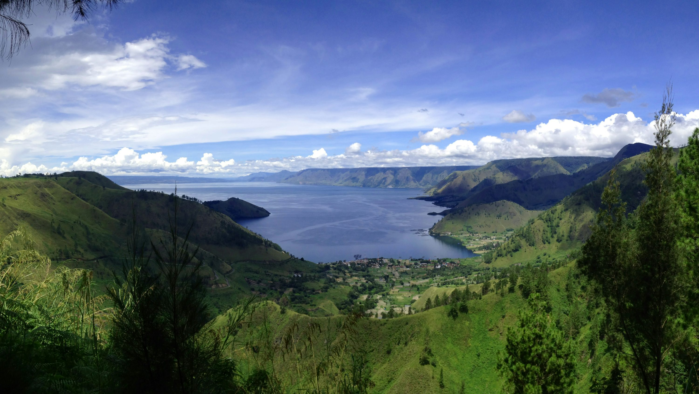

WISATA LAINNYA
Pesona Tersembunyi Sumatera Utara
Selain Danau Toba dan Kota Medan, Sumatera Utara menyimpan banyak destinasi wisata menarik yang menawarkan keindahan alam, kekayaan budaya, dan pengalaman unik. Dari hutan hujan tropis yang menjadi rumah bagi orangutan Sumatera hingga air terjun spektakuler, dari dataran tinggi yang sejuk hingga pantai yang eksotis, Sumatera Utara adalah surga bagi pecinta petualangan dan wisatawan yang mencari pengalaman autentik.
Bukit Lawang
Pusat rehabilitasi orangutan Sumatera di Taman Nasional Gunung Leuser. Wisatawan dapat melihat orangutan di habitat alaminya, melakukan trekking hutan hujan, menyusuri Sungai Bahorok dengan rafting, atau sekadar menikmati suasana desa yang tenang.
Ekowisata
Alam
Petualangan
Berastagi
Kota kecil di dataran tinggi Tanah Karo yang terkenal dengan kebun buah dan sayur serta udara sejuk pegunungan. Wisatawan dapat mengunjungi Gunung Sibayak, pemandian air panas, kebun stroberi, dan pasar buah tradisional.
Pegunungan
Agrowisata
Budaya
Air Terjun Sipiso-piso
Air terjun setinggi 120 meter yang terletak di tepi Danau Toba. Pemandangan spektakuler yang ditawarkan mencakup air terjun, lembah, dan Danau Toba. Aksesnya cukup mudah dan terdapat area pengamatan yang nyaman.
Air Terjun
Pemandangan
Fotografi
Pulau Samosir
Pulau di tengah Danau Toba yang menjadi pusat kebudayaan Batak. Terdapat banyak desa tradisional, museum, situs makam kuno, dan pemandangan alam yang indah. Tomok dan Tuktuk adalah dua desa wisata populer di pulau ini.
Budaya
Danau
Sejarah
Tangkahan
"Surga Tersembunyi" di tepi Taman Nasional Gunung Leuser yang terkenal dengan konservasi gajah. Wisatawan dapat berinteraksi dengan gajah Sumatera, berenang di sungai jernih, menikmati pemandian air panas alami, dan melakukan trekking hutan.
Konservasi
Ekowisata
Hutan
Pantai Cermin
Pantai berpasir hitam di Kabupaten Serdang Bedagai yang menjadi tujuan wisata populer bagi penduduk lokal. Terdapat taman rekreasi dengan wahana air dan hidangan laut segar. Pantai ini berjarak sekitar 2 jam berkendara dari Medan.
Pantai
Rekreasi
Kuliner
Tips Perjalanan
- Waktu Terbaik: Kunjungi Sumatera Utara antara Mei hingga September saat cuaca cenderung cerah dan kering.
- Transportasi: Sewa mobil atau motor adalah cara terbaik untuk menjelajahi berbagai destinasi. Alternatifnya, gunakan angkutan umum atau ikut tur yang diselenggarakan oleh agen perjalanan lokal.
- Akomodasi: Tersedia berbagai pilihan penginapan dari hotel berbintang hingga homestay dengan keluarga lokal untuk pengalaman yang lebih autentik.
- Perlengkapan: Untuk destinasi alam, bawalah pakaian dan sepatu yang sesuai, obat nyamuk, sunscreen, dan persediaan air yang cukup.
- Budaya: Hormati adat istiadat lokal, minta izin sebelum memotret masyarakat atau upacara adat, dan berpakaian sopan terutama saat mengunjungi tempat ibadah.
Peta Wisata Sumatera Utara
Sumatera Utara terbagi menjadi beberapa kawasan wisata utama:
Kawasan Danau Toba
- Danau Toba
- Pulau Samosir
- Air Terjun Sipiso-piso
- Parapat
Kawasan Medan-Deli Serdang
- Kota Medan
- Pantai Cermin
- Maimun Palace
- Rahmat International Wildlife Museum
Kawasan Dataran Tinggi Karo
- Berastagi
- Gunung Sibayak
- Lumbini Park
- Desa Lingga
Kawasan Langkat
- Bukit Lawang
- Tangkahan
- Taman Nasional Gunung Leuser
- Air Terjun Dua Warna
Ekowisata
Sumatera Utara memiliki potensi ekowisata yang luar biasa dengan keberadaan Taman Nasional Gunung Leuser yang merupakan bagian dari Warisan Dunia UNESCO "Tropical Rainforest Heritage of Sumatra". Pengunjung dapat melihat satwa liar seperti orangutan, gajah Sumatera, harimau Sumatera (meski sangat jarang), dan berbagai spesies burung. Selain itu, upaya konservasi di Bukit Lawang dan Tangkahan menawarkan pengalaman berinteraksi dengan satwa langka sambil berkontribusi pada pelestariannya.
Wisata Bahari
Meski kurang terkenal dibandingkan destinasi lainnya, Sumatera Utara memiliki potensi wisata bahari yang menarik, terutama di sepanjang pesisir timur dan pulau-pulau lepas pantai. Pulau Berhala dan Pantai Cermin adalah beberapa destinasi bahari yang populer. Pulau Nias di lepas pantai barat Sumatera Utara juga terkenal dengan ombaknya yang menarik para peselancar internasional dan budaya lokalnya yang unik.
Pengembangan Pariwisata
Pemerintah Indonesia telah menetapkan Danau Toba sebagai salah satu dari 10 Destinasi Pariwisata Prioritas. Berbagai pengembangan infrastruktur seperti perbaikan jalan, bandara, dan fasilitas wisata sedang dilakukan untuk meningkatkan aksesibilitas dan kenyamanan wisatawan. Pengembangan ini diharapkan dapat mendorong perekonomian lokal dan memperkenalkan keindahan Sumatera Utara ke mata dunia, sambil tetap menjaga keberlanjutan lingkungan dan keaslian budaya lokalnya.